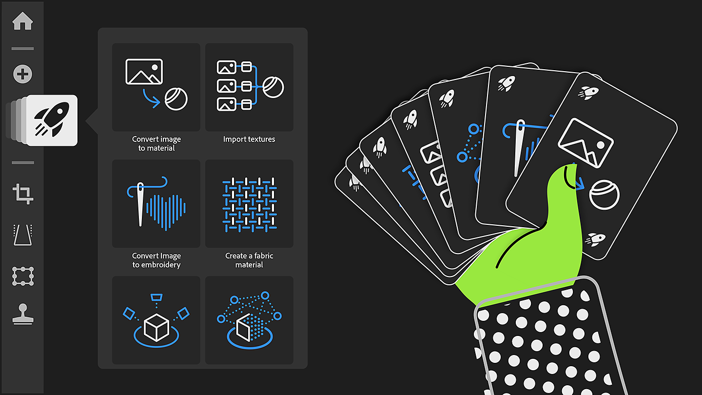
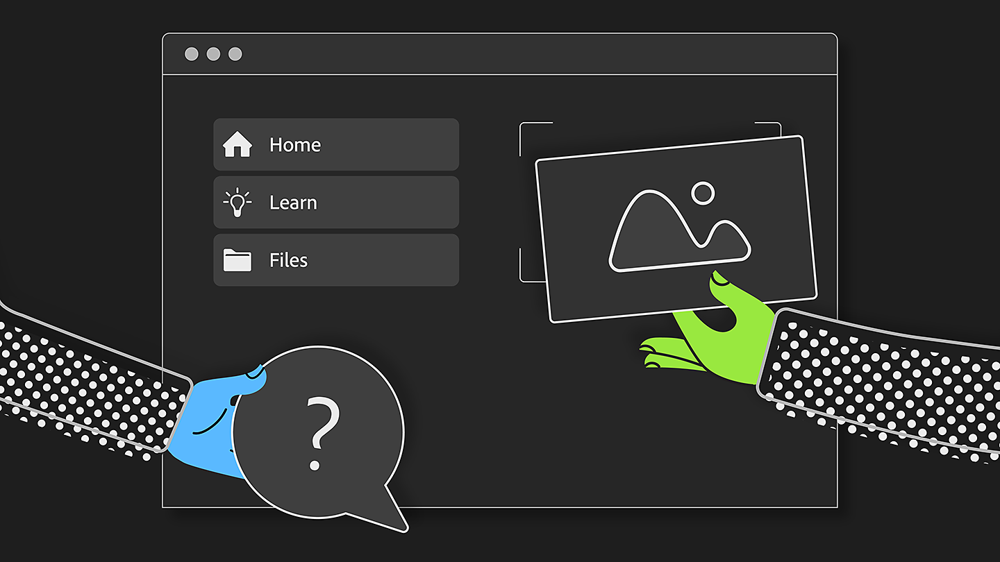
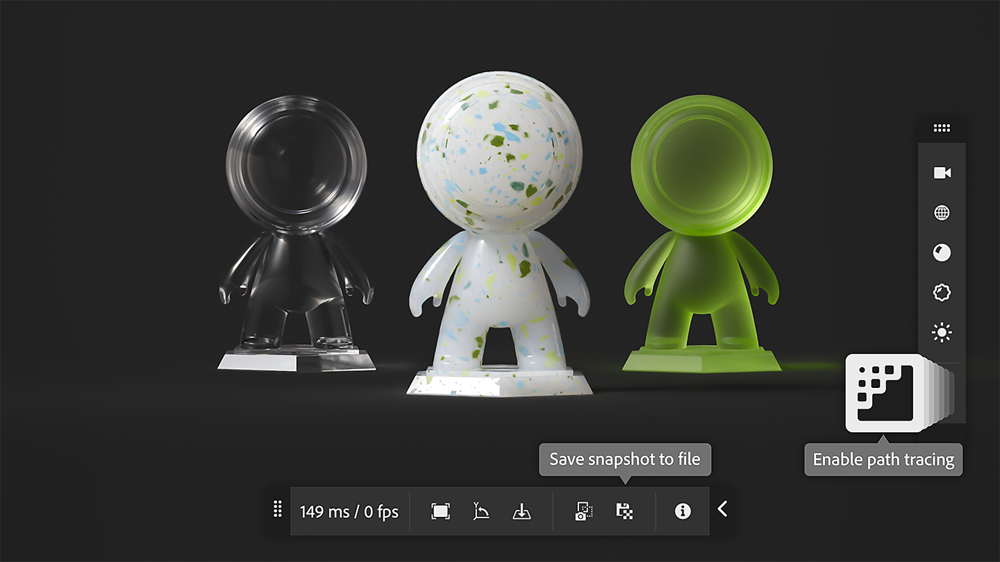
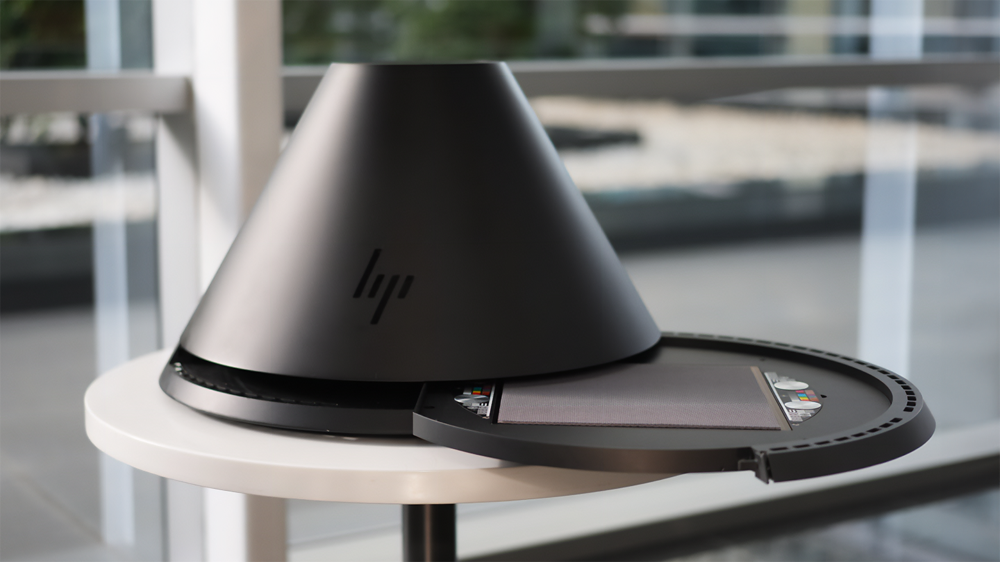

Version 5.0

Substance 3D Sampler 5.0 introduces easier ways to get into material digital twin with higher quality scans and renderings.
The main new features include:
Quick actions
Start all the main workflows of Sampler in one click and have the layer stack made ready for you!
More info here.

New home screen layout
Find all your projects, tutorials and start your work directly from the home page.
More info here.

New renderer
Choose between realtime and path-tracing improving visual consistency and support new material properties. Save snapshots of your work directly from the 3D view.
More info here.

HP Z Captis integration
With HP Z Captis and Substance 3D Sampler, bring real-world materials into digital in minutes.
Feature available for Enterprise, Teams, and Education accounts.
More info here.

V5.0 Release Notes
(Released: February 20th, 2025)
Added:
- [Onboarding] New Homepage with quick access to learning content, sample project, quick actions and recent projects.
- [Onboarding] Get started quickly with the new Quick Actions, accessible from the homepage and from dedicated panel
- [Onboarding] [Content] Quick Actions are predefined workflows that populate the layer stack with most used layers
- [Onboarding] Possibility to create a new project via a new Quick start menu, via quick actions or Custom Project
- [Onboarding] Possibility to create empty project directly from homepage via dedicated button
- [3D View] New advanced rasterizer and pathtracer bringing new rendering capabilites (properties such as coating, sheen, translucency, subsurface scattering) and visual consistency across Substance ecosystem
- [3D View] Viewer settings are now accessible directly in the 3D view
- [3D View] Possibility to save a render snapshot in clipboard or in files
- [3D View] Display a grid to visualize the scene origin
- [3D View] Enable the ground plane to catch shadows and reflections
- [3D View] Control how reflective and opaque is your ground plane
- [3D Capture] Position mesh on ground
- [Application] Check hardware compatibility on application startup
- [Application] Crash reporting window now opens right after a crash occurs
- [Content] Open a sample project to easily get started
- [Export] Export Adobe Standard Material shader in USD files
- [Generative AI] Check "Do not infer" tag when using image as an input in Image to Texture workflows
- [Project] Thumbnails are stored within the project file for faster opening of projects
- [Project] Setting in the preferences to store cache data within the project file, with different modes (no cache, light cache, full cache)
- [Scripting] [Breaking change] Qt migration to Qt6.15 - impact compatibility of existing plugins
- [Scripting] Default plugins and script folder are now in the Documents folder
- [Scripting] New UI for plugins for visual consistency with main Sampler panels
- [Scripting] Access 2 plugin examples to discover Sampler plugin capabilities
- [Scripting] New open_3d_catpure() function
- [Scripting] When inserting a layer, control if it is inserted above or below the target position
Fixed:
- [3D Capture] Crash if Object Capture cannot be started on macOS
- [Application] Crash at exit
- [Application] Hang at exit while adding assets to the project panel
- [Application] Renaming a project asset does not work unless you press enter
- [Application] Undo and redo menu entries are not disabled when they should be
- [Assets] Unable to delete assets from the All Libraries section of the Assets panel
- [Content] Atlas creator - Use existing opacity map if present
- [Content] Color ID Blend - Fix color picking in the basecolor
- [Layers] Avoid useless computation when using generators
- [Layers] Tweaking a generator may lead to triggering too many computes
- [Performance] Improve GPU memory management
- [Performance] Render cache may not be used when restarting the app
- [Resources] Read only files are not visible in the Assets panel
- [Scripting] Allow reusing a layer after adding another layer
- [Scripting] Changing the layer stack structure several times in one script may fail
Removed:
- [Application] Remove support for .dng and .nef image files